Money journey v2: Elara answers, a calmer panel, two rebuilt days
Private prototype, not the app. Spanish first, English beside it. Not deployed.
1. What was rebuilt
Week 1 · Day 4 “¿Llega tarde, no alcanza o no se sabe?” and Week 2 · Day 4 (day 11) “Compara en igualdad de condiciones”. They were chosen because their lesson already is a comparison: separating timing, amount and missing facts (W1), and comparing two offers on the same terms (W2). Every other day opens in the same panel with its V4 content unchanged.
- Elara answers: a response sits right under each answer, usually one or two sentences, and she advances only when pressed.
- Branching: “Neither” skips the personal steps and the day becomes a practice with made-up examples; “payment only”, “income only”, “both”, “not sure” each change the reply and the summary. Changing an earlier answer re-validates later steps and the summary.
- Interactions: sort with explanations (W1); reveal-the-missing-facts table with an optional “my own numbers” mode and a message builder (W2). Tap-based, no dragging needed.
- Inputs: dates are real calendar dates (confirmed), or stay “approximate”, or “unknown”; amounts parse by locale, no currency assumed; blank is never zero.
- Panel: three heights (answer, landscape, expanded), a drag handle, “Ver paisaje” and “Volver a la pregunta”, arrow keys on the handle. The landscape does not zoom or drift while she reads or types; it slides only when a step changes.
- Writing: “What will you check before your next money decision?” replaces “What consideration would you like to remember…”; the invented “You kept tending, and it held” is gone, and the week recap counts real entries.
2. Week 1 · Day 4 (screens, 390 px)
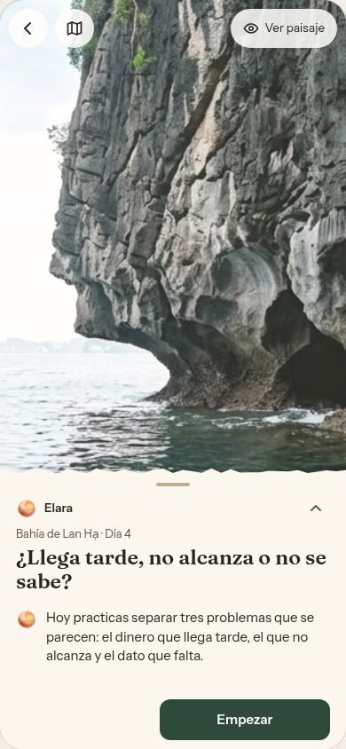
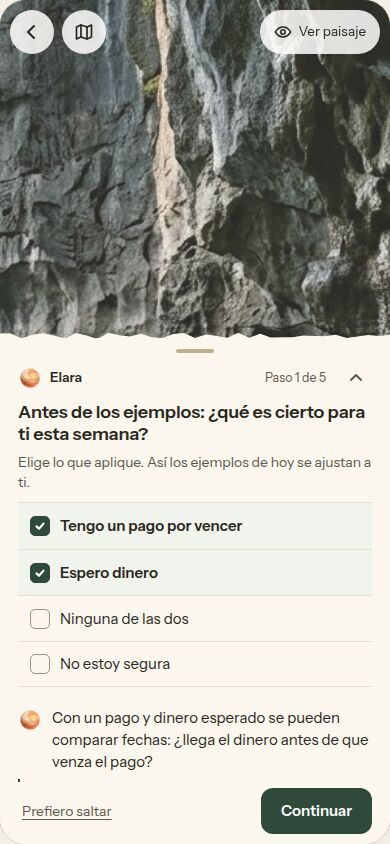
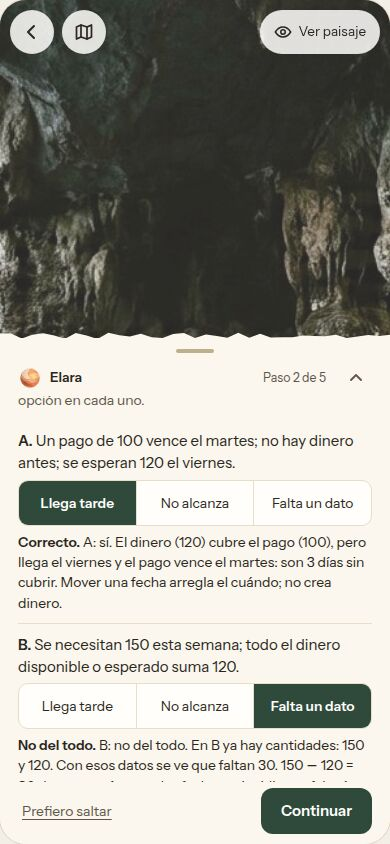
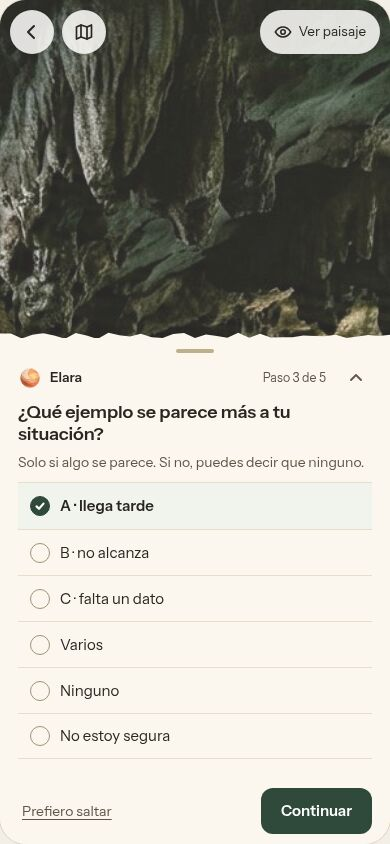
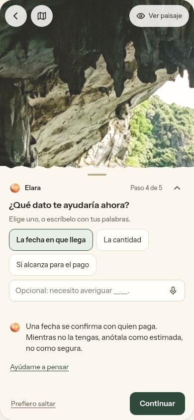
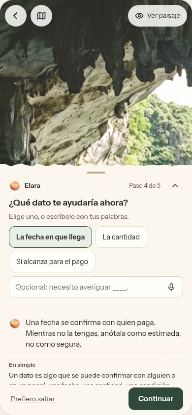
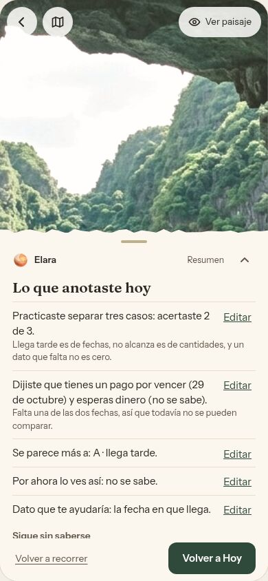
3. Week 2 · Day 4 / day 11 (screens, 390 px)
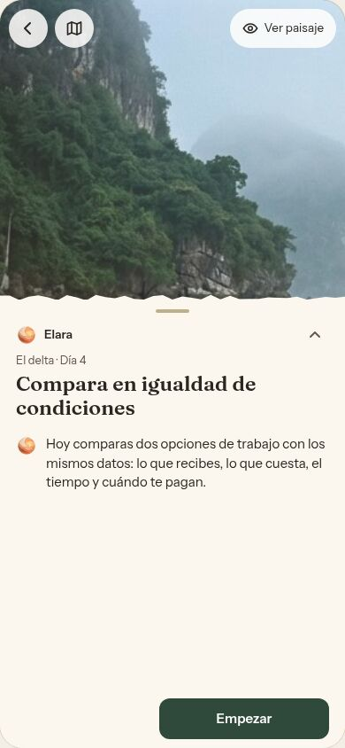
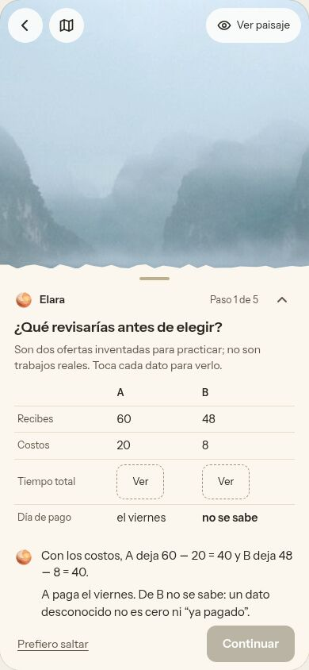
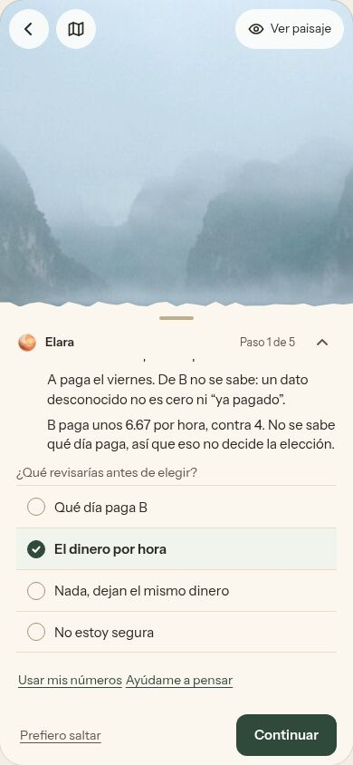
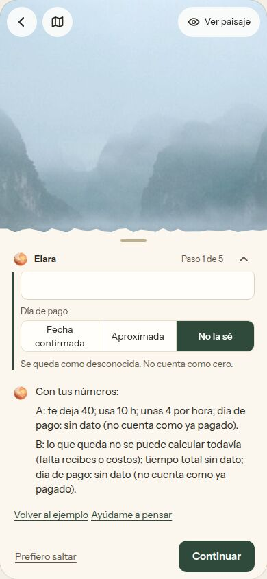
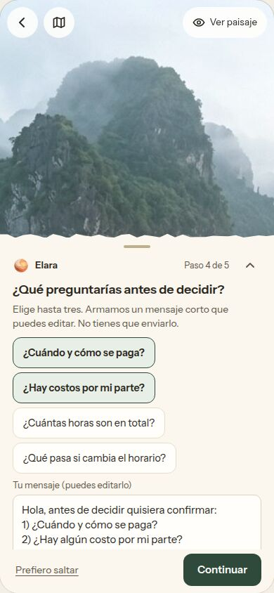
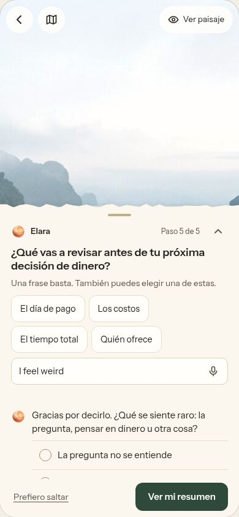
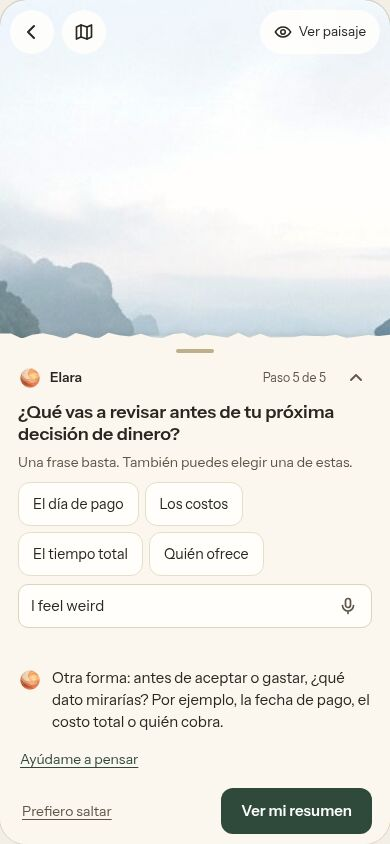
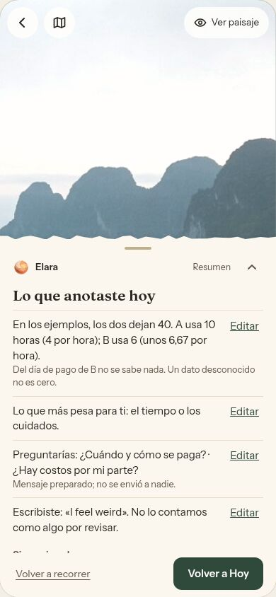
4. Panel positions, 320 px, large text
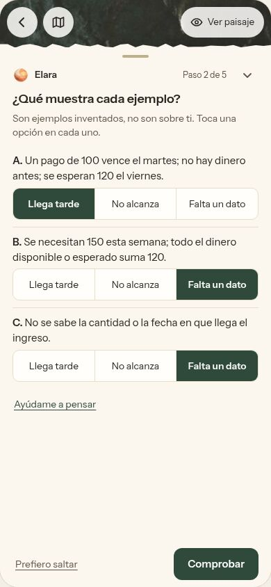
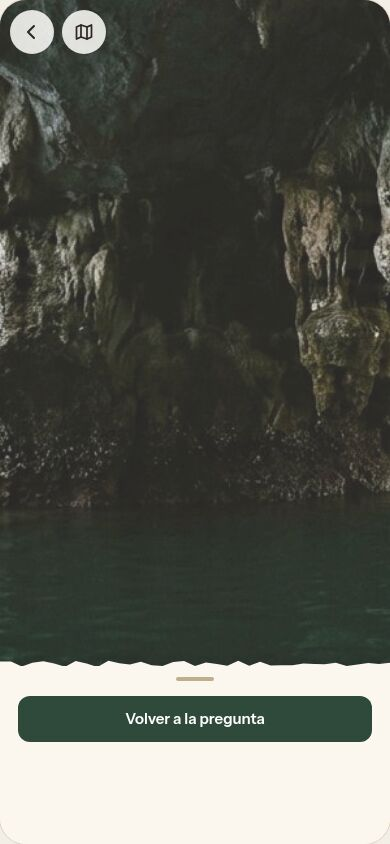
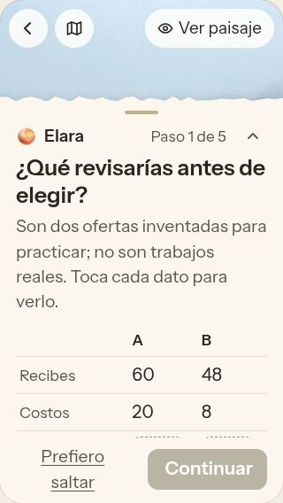
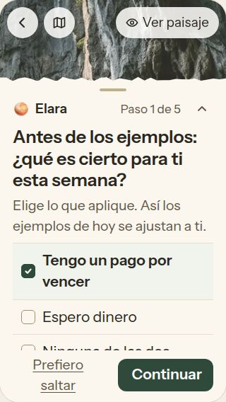
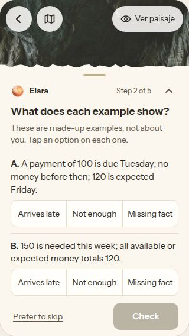
5. Content version used and unresolved differences
- Used: Money Clarity V4 build edition (19 Oct 2026) as it is in
apps/mobile/src/i18n/locales/{es,en}/pathCopy/money.tsonux/circles-clarity-2026-10-21(cb7f602), which includes the 19 Oct “weeks 1-2 based on v4 concise” build and the ES-001 to ES-003 fixes. Unchanged V4 strings are used verbatim. - Not checked: TestFlight. I cannot reach it. The brief’s recording says the TestFlight build is newer than this source, so strings may differ there (for example the production screen says “Prefer to skip” where V4 data says “Skip for now”).
- Not used: the separate 210-day curriculum draft (I did not find it in the repository history I searched) and any v4.1 pack (the V4 copy draft explicitly says v4.1 is not used).
- The checked-out clone in this environment is an older branch (
claude/beta-v2-repairs, 14 Oct), so I read the sources from git history only. - New or rewritten strings: 165 strings, all marked as proposals for Alejandra. Examples: the added “what is true this week” step on Day 4 (V4 goes straight to the examples), the rewritten takeaway question on Day 11, every Elara reply that V4 does not have, the help text, the message template. They are listed in the “Textos propuestos” list beside the prototype.
- Decimal mark: V4’s Spanish strings write 6.67; computed numbers here follow the language (6,67). This is the open Spanish choice #12 in the V4 copy draft.
6. Was feedback missing in the app too?
Yes, for these days. The app has a reply mechanism (replyToStep: a model reply with the authored line as the floor, and a non-answer check), but almost every Money V4 step is marked quiet: true, which the day-steps doc says means one press, on to the next step, and the server never calls the model. So between steps there is no response, except the authored replies on a few choice steps. The prototype’s missing feedback is therefore a content-model gap in the app, not just a prototype gap. V4 also has no per-day completion line (V4 copy draft item 4) and no conditional visibility, which is why the “no pending payment” branch could not be consistent.
7. Functional, simulated, still needed
| Area | Functional now | Simulated or limited | Needed before the curriculum |
|---|---|---|---|
| Elara’s replies | Authored, chosen by what she marked; deterministic numbers and dates | No connection to the app’s model. Free text is saved as written and not interpreted. The “I feel weird” clarification triggers on a simple length and first-person-phrase rule that exists only here | Decide what the model may do on free text (the app’s replyToStep already has an authored floor and a non-answer rule); add a conditional-visibility field to the step contract |
| Voice | Uses the browser’s speech recognition where it exists: listening, transcript ready, edited, sent on Continuar. Tested with a stand-in recogniser | Not tested on a real device or in Spanish with a real microphone | Device test; the app’s own Whisper path for the real thing |
| Saving | Browser localStorage; “Guardado” appears only after a read-back succeeds | No account, no sync, not the app’s answer store | Map to step_answers |
| Panel | Drag, tap and keyboard; answers and progress stay put; reduced motion and a “no movement” switch | Keyboard avoidance uses the visual viewport; not tried on a real phone | Real-device pass |
| Landscapes | Realistic Lan Hạ images (AI-generated) | Days without their own art reuse those images | Weeks 2 to 5 art (queued separately) |
| Hoy | “Volver a Hoy” returns to the day’s arrival | No Hoy screen in the prototype | Wire to the real screen |
| Other 33 days | Open in the new panel with V4 content, compact fields and their existing authored replies | Not rebuilt: no branching, no interactions, no summaries beyond a list of her entries | Apply the shared pieces day by day |
8. How it was checked
- Scripted runs in a real browser: 75 checks across 390 px, 320 px, large text, Spanish and English. They cover the none / pay / income / both / unsure paths, a date typed as “34” (rejected, never stored), approximate and unknown dates, amounts in two locales, a blank cost staying unknown, editing an earlier answer and the summary updating, wrong sort answers getting the right explanation, a retry invitation for “asdf”, one clarification for “I feel weird” and none the second time, panel drag, tap and keyboard, answers surviving panel moves, the scene staying still, reduced motion, and voice states. All passed on the final build.
- No horizontal overflow, the primary action visible, and no target under 44 px in the panel at the sizes tested.
- Screens above are real renders from those runs. Not covered: real keyboards, real phones, screen readers beyond roles and live regions.